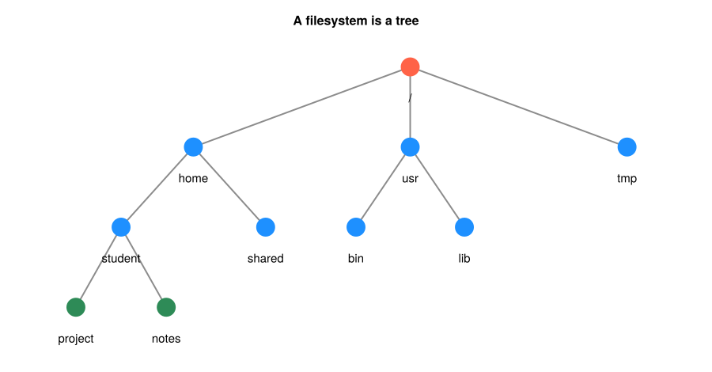

2. Linux環境とコマンド#
第1章では、数値解だけでなく、計算条件や検証の結果も記録することが大切だと学んだ。実際に計算を進めるには、コードを保存し、それを実行し、得られた結果を後から読み返せるようにする必要がある。
本章では、第1章の指数減衰の計算を題材に、作業場所を作る → コードを保存する → 実行する → 結果を記録して確認するという流れを一度体験する。この作業のために使うのが、ターミナルへ文字で入力する命令、すなわちコマンドである。
ノートブックではコードと結果が同じ画面に並ぶ。一方、ファイルに保存したプログラムをターミナルから実行する方法では、コードと出力を自分で整理する。この方法に慣れると、条件を変えて同じ計算を繰り返したり、研究室の計算機で実行したりするときにも役立つ。
2.1. この章の目標#
ターミナルで、現在の作業場所とファイルの保存先を確認できる。
用意されたJuliaのコードをファイルに保存し、実行できる。
計算条件と結果をログに残し、後から読み返せる。
ファイルが見つからないなどのエラーが出たとき、確認する場所を説明できる。
コマンドやオプションを一度に暗記する必要はない。基本部分の作業を順に試し、必要な操作を資料から探せるようになろう。♣節は、作業の自動化や遠隔の計算機を使う際に参照する補足であり、章末の演習には必要ない。
2.2. Linux・ターミナル・シェルの違い#
普段、ファイルをフォルダに移動したりアプリケーションを起動したりできるのは、OS（Operating System）がファイルの管理やプログラムの実行を担当しているためである。LinuxもOSとして広く使われている。厳密にはLinuxはOSの中核であるカーネルの名前だが、本章ではUbuntuなどのLinux環境全体を指して用いる。
Linuxでは、計算の実行やファイル整理をコマンドで行う環境が整っている。この操作をまとめて記録・再実行できることが、数値計算で便利な点である。ただし、Linuxそのものと、文字で命令するための道具は区別しよう。
名前 |
役割 |
|---|---|
OS |
ファイル管理やプログラム実行などを支える。Linux、Windows、macOSなどがある |
ターミナル |
文字を入力し、実行結果を表示するための画面を提供する |
シェル |
入力したコマンドを解釈するプログラム。 |
Julia |
数値計算のコードを実行するプログラミング言語・実行環境 |
例えば julia src/decay.jl と入力すると、シェルがJuliaを起動し、Juliaが src/decay.jl の内容を実行する。シェルに対する命令と、Juliaの計算式は別のものである。
2.2.1. コマンドを入力する場所を用意する#
本章の基本操作は、Linuxの bash やmacOSの zsh などで使える範囲を扱う。
手元の環境 |
本章で使う入力場所 |
|---|---|
Linux |
「端末」「Terminal」などのアプリケーション |
macOS |
「ターミナル」アプリケーション。macOSはLinuxではないが、ここで使う基本操作の多くは共通している |
Windows |
WSLで用意したUbuntuなどのシェル。Windows Terminalを使う場合はUbuntuのタブを選ぶ |
Windows Terminalというアプリを開いただけでは、WSLのシェルを使っているとは限らない。PowerShellやコマンドプロンプトでは、本章と同じ名前のコマンドでも働きが異なる場合がある。WSLはWindows上でLinux環境を利用する仕組みで、導入手順はMicrosoftの公式案内を参照してほしい。プログラミング演習1の「WSLとPython環境」も背景の説明として利用できる。
注釈
本章のシェルコマンドは、上の表のターミナルへ入力する。JuliaやPythonのノートブックのコードセルに、そのまま貼り付けるものではない。ブラウザ上の資料を読みながら、別にターミナルを開いて作業しよう。Juliaの準備がまだでも、ファイルを作成・整理するところまでは試せる。
2.3. 最初の操作：現在地とファイルを見る#
ターミナルには、例えば次のような表示が出る。
student@linux:~$
これはプロンプトといい、ユーザーの入力を待っている状態、つまり「次のコマンドを入力できる」状態である。ユーザ名や現在地などを含むことが多いが、表示は環境により異なり、末尾が % や>のこともある。
以下のコマンド欄では、環境名やユーザ名の表示は省略し、ユーザーが入力する部分だけを示すこととする。1行ずつ入力し、Enterで実行しよう。
まず次の2行を試す。
pwd
ls
pwd は現在いるディレクトリ（フォルダ）の場所を表示し、ls はその中のファイルやディレクトリの名前を表示する。例えば pwd が /home/student と返せば、そこが現在の作業場所である。macOSなら /Users/ユーザ名 など、実際の表示は異なる。
コマンドの基本形は「コマンド名、必要ならオプション、対象となる引数」である。例えば ls -l の -l は詳細表示のオプションである。半角スペースで区切り、ファイル名の大文字・小文字も資料と合わせよう。
何も表示されずプロンプトへ戻ることもある。例えば空のディレクトリでの ls は、表示する名前がないので何も出さない。表示の有無だけで成功・失敗を判断せず、現在地や作成したファイルを確かめるのが基本である。
注釈
julia> と表示されている場合は、シェルではなくJuliaの対話画面にいる。exit() を入力したり、Ctrl-Cで中断や入力を終了し、Ctrl-D でJuliaを終了すると、Juliaを起動したシェルへ戻れる。シェルとJuliaの入力場所を区別してから作業を進めよう。
2.4. ファイルの場所を表す：ディレクトリとパス#
ファイルはディレクトリの中に置かれ、ディレクトリの中にはさらに別のディレクトリを作れる。この階層を木の枝のようにたどって、ファイルの場所を表したものがパスである。LinuxやmacOSでは、階層の一番上を /（ルートディレクトリ）で表す。
表記 |
意味 |
|---|---|
|
ファイルシステムの一番上 |
|
自分のホームディレクトリ。シェルが自分のホームのパスへ展開する |
|
現在のディレクトリ |
|
一つ上のディレクトリ |
/home/student/project/memo.txt のように / から始めて場所を指定するものは絶対パスである。project/memo.txt や ../memo.txt のように現在地を基準にするものは相対パスである。同じ相対パスでも、現在地が変われば指す先も変わる。
次の図は、Linuxでの階層の一例である。自分の計算機とまったく同じ名前・構成である必要はない。根元の / からたどるのが絶対パス、今いる場所からたどるのが相対パスと考えよう。
※図を読むだけなら実行は不要で、再作成する場合だけ追加パッケージ CairoMakie を使う。CairoMakie は、Juliaのパッケージ管理である Pkg からインストールできる。
Show code cell source
# 初回のみ: import Pkg; Pkg.add("CairoMakie")
using CairoMakie
CairoMakie.activate!(type="svg")
set_theme!(Theme(fontsize=16, linewidth=2.5))
figure_dir = isdir("pic") ? "pic" : joinpath("..", "pic")
positions = Dict(
"/" => (0.0, 3.0),
"home" => (-2.4, 2.0), "usr" => (0.0, 2.0), "tmp" => (2.4, 2.0),
"student" => (-3.2, 1.0), "shared" => (-1.6, 1.0),
"bin" => (-0.6, 1.0), "lib" => (0.6, 1.0),
"project" => (-3.7, 0.0), "notes" => (-2.7, 0.0),
)
edges = [
("/", "home"), ("/", "usr"), ("/", "tmp"),
("home", "student"), ("home", "shared"),
("usr", "bin"), ("usr", "lib"),
("student", "project"), ("student", "notes"),
]
fig_filesystem = Figure(size=(900, 470))
ax = Axis(fig_filesystem[1, 1]; title="A filesystem is a tree")
for (parent, child) in edges
xp, yp = positions[parent]
xc, yc = positions[child]
lines!(ax, [xp, xc], [yp, yc]; color=:gray55, linewidth=2)
end
for (label, (x, y)) in positions
color = label == "/" ? :tomato : (label in ("project", "notes") ? :seagreen : :dodgerblue)
scatter!(ax, [x], [y]; color=color, markersize=34)
text!(ax, x, y-0.30; text=label, align=(:center, :top), fontsize=15)
end
xlims!(ax, -4.4, 3.2)
ylims!(ax, -0.65, 3.45)
hidedecorations!(ax)
hidespines!(ax)
save(joinpath(figure_dir, "linux_filesystem_tree.svg"), fig_filesystem)
fig_filesystem


図 2.1 例えば project にいるとき、同じ階層の notes へは ../notes と指定できる。.. で student に戻り、そこから notes へ進む。#
2.5. 計算用の作業場所を作る#
ここからは一つの作業を順に進める。自分がファイルを作成してよい場所で pwd と ls を確認してから、次を実行しよう。numerical_practice がすでにある場合は、その内容を確かめ、初回の練習には別の名前を使ってほしい。
mkdir numerical_practice
cd numerical_practice
mkdir src logs
pwd
ls
mkdir はディレクトリを作り、cd は現在地を移す。ここでは練習用の numerical_practice の中に、コードを置く src と、計算の記録を置く logs を作った。ls の結果に両方の名前があればよい。
numerical_practice/
├── src/ コードを置く
└── logs/ 計算の記録を置く
src と logs は用途が分かるように自分で付けた名前であり、特別な機能を持つわけではない。まずこの程度の構成から始め、入力データや図が増えたら必要なディレクトリを加えるとよい。
次に、現在地が変わることを確かめる。
cd src
pwd
cd ..
pwd
最初の pwd の末尾は numerical_practice/src、最後は numerical_practice になる。この後の基本部分は、numerical_practice にいる状態で進める。
2.6. メモを作り、コピーと保存先を確かめる#
コードやログは、文字として内容を読めるテキストファイルである。まず短いメモで、ファイルを作って読むことを試そう。
echo "Euler decay experiment" > memo.txt
cat memo.txt
echo は指定した文字列を出力する。> はその出力をファイルへ保存する記号であり、ここでは memo.txt を作る。同名のファイルがある場合は内容を上書きする。cat はファイルの内容を表示するので、Euler decay experiment と読めればよい。
ファイルを作っても、現在地は変わらない。memo.txt は src や logs と同じく、現在の numerical_practice の中に置かれる。次に、コピーを作って名前を変える。
cp memo.txt memo_backup.txt
mv memo_backup.txt old_memo.txt
ls
cp コピー元 コピー先 は元のファイルを残してコピーを作る。mv 元の名前 新しい名前 は名前を変更する。移動先のディレクトリを指定すれば、ファイルの移動にも使える。この例では memo.txt と old_memo.txt が残る。コピー先・移動先に同名のファイルがある場合は上書きにつながるため、対象を確かめてから操作しよう。
練習で作ったコピーだけを削除する。
rm old_memo.txt
ls
rm は通常ゴミ箱を経由せず削除する。ここでは元の memo.txt は残す。ディレクトリを消す rmdir は、中身が空の場合に使う。次の例では、空の練習用ディレクトリを作ってから消している。
mkdir empty_practice
rmdir empty_practice
作業中の numerical_practice にはファイルやディレクトリが入っているので、rmdir では削除できない。計算のコードと記録は、この後も使うため残しておこう。
2.7. 第1章の計算をファイルに保存して実行する#
2.7.1. Juliaの起動を確認する#
ターミナルから次を実行する。
julia --version
julia version 1.12.7 のように版が表示されれば、このシェルからJuliaを起動できる。これは版の確認であり、まだ計算コードを実行したわけではない。本講義ではJulia 1.12以降を想定しているので、表示の末尾まで同じである必要はない。
command not found と出る場合は、Julia公式のインストール案内に従って準備する。WSLで本章の作業をしている場合は、WSL内のLinux環境で julia が使えるようにする。Windows側への導入とWSL内への導入は区別しよう。準備に時間がかかる場合は、以下のコードと出力例を読み、実行は準備後に戻って試せばよい。
2.7.2. テキストエディタでコードを保存する#
次のコードを、numerical_practice/src/decay.jl というファイルへ保存する。decay.jl がファイル名で、.jl はJuliaのコードであることを示す拡張子である。ワープロ文書ではなく、プレーンテキストとして保存しよう。
普段使うテキストエディタで numerical_practice を開き、その中の src に新しいファイルを作ればよい。WSLを使う場合も、ターミナルで作ったのと同じディレクトリをエディタで開く。ターミナル内で使えるエディタ nano が導入されていれば、numerical_practice から次のように開く方法もある。
nano src/decay.jl
nano では、以下のコードを貼り付け、Ctrl+O、Enterで保存し、Ctrl+Xで終了する。このときコード枠の囲み記号は貼り付けない。別のエディタを使う場合も、保存先とファイル名は同じにする。
function main()
lambda = 0.4
N0 = 1.0
T = 5.0
n = 10
h = T/n
N = N0
for k in 1:n
N = N - h*lambda*N
end
exact = N0*exp(-lambda*T)
println("lambda=", lambda, ", N0=", N0, ", T=", T)
println("n=", n, ", h=", h)
println("numerical=", N)
println("exact=", exact)
println("absolute_error=", abs(N-exact))
end
main()
lambda は第1章の \(\lambda\)、n はステップ数で、更新式は第1章と同じである。計算を main という関数にまとめ、最後の main() で呼び出している。文法は第3章で学ぶので、ここでは「条件を決める部分」「値を更新する部分」「結果を表示する部分」を確認できればよい。
2.7.3. 保存したファイルを指定して実行する#
エディタで保存した後、ターミナルの現在地が numerical_practice であることを確かめ、次を実行する。
ls src
cat src/decay.jl
julia src/decay.jl
最初の2行でファイル名と内容を確認し、最後の行でJuliaにそのファイルを実行させる。出力は次のようになる。小数の末尾は環境によって異なる場合がある。
lambda=0.4, N0=1.0, T=5.0
n=10, h=0.5
numerical=0.10737418240000003
exact=0.1353352832366127
absolute_error=0.02796110083661267
画面に数値が出たら、第1章の \(n=10\) の行と比べよう。値だけでなく、\(T\) や \(n\) が同じことも確認する。ファイルを編集しても保存前の内容は実行に反映されないので、変更後は保存してから実行する。
src/decay.jl は、現在地から見た相対パスである。もし src の中へ移動して実行するなら julia decay.jl となる。本章の続きでは numerical_practice を現在地にするので、移動した場合は cd .. で戻ろう。
2.8. 計算条件と結果をログに残す#
画面を閉じた後も結果を読めるように、実行時の出力をファイルに保存しよう。このような実行の記録をログという。メモを作ったときと同じ > を使う。
julia src/decay.jl > logs/run_n10.log
cat logs/run_n10.log
1行目では通常の出力が画面に出ず、logs/run_n10.log に保存される。2行目でその内容を読める。ログには答えだけでなく lambda、N0、T、n も書き出されているため、どの条件の結果だったかを確認できる。
このファイル名の n10 は人が付けた目印であり、ファイル名が計算条件を設定するわけではない。例えば出力先だけを run_n20.log に変えても、コードの n = 10 は変わらない。ログ内の条件も読むことが大切である。
2.8.1. 上書きと追記#
> は同名ファイルの内容を置き換える。前の結果を残すには別名で保存するか、内容を確認してから >> による追記を使う。例えば、実行方法をメモへ追記するには次のようにする。
echo "Run: julia src/decay.jl > logs/run_n10.log" >> memo.txt
cat memo.txt
この > は引用符の中にあるので、ここではメモに書く文字として扱われる。実際に追記を行っているのは、引用符の外にある >> である。memo.txt に最初のメモと実行方法の2行が残ったことを確認しよう。
2.8.2. エラーメッセージも記録する#
プログラムの通常の出力を標準出力、エラーメッセージなどの出力を標準エラー出力という。> だけでは、標準エラー出力は通常ターミナルへ出る。両方を同じログに記録する書き方は次の通りである。
julia src/decay.jl > logs/run_n10.log 2>&1
cat logs/run_n10.log
2>&1 は、標準エラー出力の行き先を標準出力と同じにする指定である。本章では、この順序を含めた書き方を参照しながら使えればよい。計算を実行したら、ログが作られたことだけでなく、結果まで出ているか、途中にエラーがないかを読む。
また、> で保存先のファイルは作れても、親ディレクトリは作れない。logs が存在しない場合には、出力先を用意できず計算を起動できないので、ls で確認する。
2.9. 必要な記録を探して読む#
短いログなら cat で全体を読める。長くなったときは、先頭や末尾だけを表示する方法が役立つ。
head -n 2 logs/run_n10.log
tail -n 1 logs/run_n10.log
この例では、head で先頭2行の計算条件、tail で最後の行の絶対誤差が読める。-n の後ろの数が、表示する行数である。長いファイルをページごとに読む場合は、次も使える。
less logs/run_n10.log
less の画面ではSpaceで先へ進み、b で戻り、q で終了する。ログが増えた場合には、名前を探す操作と内容を探す操作を使い分けよう。
find . -name '*.jl'
grep 'absolute_error' logs/run_n10.log
find は現在地 . とその下の階層から、名前が .jl で終わるファイルなどを探す。この例では ./src/decay.jl が見つかる。* は任意の長さの文字列に対応する記号であり、ここでは引用符を付けて検索条件をそのまま find に渡している。grep は指定した文字列を含む行をファイルの内容から探す。後者では絶対誤差の行が取り出される。
よく使う操作を、作業の目的から引けるようにまとめておく。
したいこと |
コマンド例 |
|---|---|
現在地・ファイル名を確認する |
|
作業場所を作る・移動する |
|
内容を保存しながらコピー・改名する |
|
不要なファイル・空のディレクトリを消す |
|
内容を読む |
|
名前・内容を探す |
|
表の例をすべてもう一度実行する必要はない。使い方が分からなくなったとき、本文の対応する作業へ戻って確認しよう。
2.10. うまくいかないときは、何を確認するか#
コードの誤りを疑う前に、「どこで、何を実行したか」を確かめると解決する問題も多い。例えば src に移動した後に julia src/decay.jl と入力すると、src のさらに下の src/decay.jl を探してしまう。
本章の手順では、numerical_practice に戻って次を確かめる。
pwd
ls
ls src
cat src/decay.jl
困ったこと |
まず確認すること |
|---|---|
|
今使っている環境にJuliaを導入したか。 |
|
|
|
同名のファイルやディレクトリがすでにある。内容を確認して既存のものを使うか、別名にする |
|
自分が読み書きできる場所か、指定先が正しいかを確認する |
コードを変えたのに結果が変わらない |
保存したか、実行したファイルは編集したファイルか、古いログを読んでいないか |
|
指定したログを |
長い処理を途中で止めたい場合は、実行しているターミナルでCtrl+Cを押すと中断できることが多い。中断した場合のログや出力は途中までかもしれないので、最後まで実行した結果と区別する。
エラーが出たときの記録には、実行したコマンド、現在地、メッセージをそのまま残すとよい。「動かなかった」だけよりも、原因を自分で調べたり相談したりしやすくなる。
2.11. \(\clubsuit\) 同じ手順をまとめて実行する#
ここまでの作業を繰り返すときには、シェルのコマンドをファイルに並べたシェルスクリプトが使える。numerical_practice に run.sh というテキストファイルを作り、次の内容を保存する。
#!/usr/bin/env bash
mkdir -p logs
julia src/decay.jl > logs/run_latest.log 2>&1
mkdir -p は、必要な親ディレクトリも含めて作り、同名のディレクトリがすでにあればそのまま使う。最後の行は先ほどと同じ計算であり、ここでは出力名を run_latest.log としている。再実行するとこのログは上書きされるので、残したい結果は先に別名で保存する。
numerical_practice を現在地にして、次のように実行する。
bash run.sh
cat logs/run_latest.log
この方法ではBashがスクリプトを読み込む。スクリプトへ実行権限を付けて、直接起動する方法もある。
chmod +x run.sh
./run.sh
./ は現在のディレクトリを明示する指定である。この方法では先頭行の #!/usr/bin/env bash が実行に使うプログラムを指定する。julia src/decay.jl としてJuliaにファイルを読ませる場合には、decay.jl 自体へ実行権限を付ける必要はない。
スクリプトに書いた src/decay.jl も、実行時の現在地を基準とする。run.sh の置き場所へ自動的に移動するわけではない。この例は numerical_practice から実行する手順として作っている。
計算条件を大量に変えるときには、この中へ繰り返しを書いたり、Juliaのプログラムに引数を受け取らせたりできる。本章では、まず同じ手順を保存して再実行できることを押さえればよい。
2.12. \(\clubsuit\) 出力の組み合わせと実行環境の確認#
2.12.1. パイプで出力を次のコマンドへ渡す#
> が出力をファイルへ保存するのに対して、パイプ | は、あるコマンドの標準出力を次のコマンドの入力へ渡す。
grep 'absolute_error' logs/run_n10.log | wc -l
この例では、絶対誤差を含む行を取り出し、その行数を wc -l で数える。本章のログなら1行である。ここで数えているのは行数であり、誤差の値ではない。
2.12.2. PATHはコマンドの探索先#
シェルやプログラムが参照する設定値の一部を環境変数という。代表的な PATH は、外部コマンドを探すディレクトリの一覧である。
echo "$PATH"
command -v julia
command -v julia で、このシェルから julia がどのように見つかるかを確認できる。インストール済みでも起動できないときは、別の環境に導入していないか、コマンドの探索先に含まれているかを調べる。PATH はコードやデータファイルの探索場所を一律に決めるものではない。
2.12.3. 実行中のプログラムを確認する#
実行中のプログラムはプロセスとして管理される。ps はプロセスの情報を表示するコマンドで、例えば ps -u ユーザ名 で自分のプロセスを確認できる。表示されるPIDはプロセスの識別番号である。
実行中のターミナルでCtrl+Cを使えない場合などには、対象を確認して kill PID で終了を要求する方法がある。PID の部分は自分の対象プロセスの番号へ置き換える。強制終了を行う kill -9 は後始末の機会を与えないので、通常の終了要求で止まらない場合の手段である。本章の短い計算では、これらを実際に試す必要はない。
2.13. \(\clubsuit\) 遠隔の計算機を使う場合#
研究室のワークステーション・サーバーやスパコンなどを使うときは、手元の計算機から Secure Shell (SSH) で接続し、接続先のシェルを操作することがある。例えば ssh ユーザ名@ホスト名 の形で接続するが、ユーザ名や接続先は利用する計算機の案内に従う。本章の練習のために接続先を用意する必要はない。
接続後に pwd や ls を実行すると、表示されるのは接続先の現在地やファイルである。手元と接続先に同じ名前のディレクトリがあっても、同じファイルが入っているとは限らない。接続先で exit と入力するとSSH接続を終了し、手元のシェルへ戻る。
ファイルの転送には scp などを使える。例えば、接続先に書き込み可能な ~/work がある場合、手元の numerical_practice から
scp src/decay.jl ユーザ名@ホスト名:~/work/
の形でコードを転送できる。接続先で作ったログを手元へ持ち帰るときは、転送元と転送先を逆に指定する。これは書き方の例であり、実際の接続先に置き換えて使う。
スーパーコンピュータでは、接続直後のログインノードで長い計算を実行せず、ジョブスケジューラへ依頼して計算ノードで実行する場合がある。実行方法と保存場所の規則はシステムごとに異なるので、利用案内を確認する。その場合も、コード、条件、出力の場所を把握して記録するという本章の基本は共通している。
2.14. まとめ#
本章のまとめ
ターミナルに入力したコマンドをシェルが解釈し、Juliaなどのプログラムを起動する。
ファイルを扱うときは、現在地と保存先を確かめる。相対パスの指す場所は現在地によって変わる。
コードをファイルに保存し、計算条件と結果をログへ残すと、後から確認・再実行しやすくなる。
エラーが出たときは、実行したコマンド、現在地、ファイルの内容、ログを確認する。
次の第3章「Juliaと線形代数」では、用意されたコードを実行する段階から、自分で計算を記述する段階へ進む。本章の decay.jl で使った変数や繰り返しに加えて、ベクトル・行列を扱う書き方を学ぶ。
2.15. 演習#
本文のコマンドやコードを見ながら取り組んでよい。コマンドの暗記ではなく、保存した内容と計算結果を自分で確認できることを目標にする。♣節の操作は使わない。
演習
作業の記録を残す：本文の手順に沿って
decay.jlを実行し、ログへ保存せよ。作業場所、実行したコマンド、ログの保存先を短くメモし、ログからステップ数と最終時刻を読み取れ。Juliaをまだ準備できていない場合は、本文の出力例を使ってメモを作り、実行は準備後に確認すればよい。同じファイルを見つける：
numerical_practiceと、その中のsrcにいるときでは、decay.jlの指定の仕方はどう変わるか。本文のディレクトリ構成を見て説明せよ。ファイルが見つからないとき、最初に確認したいことも挙げよ。結果だけで十分かを考える：友人から「計算結果は
0.107374だった」とだけ伝えられた。この結果を第1章の計算と比較するには、ほかに何を知りたいか。本章のログとコードを見て、残しておくと役立つ情報を挙げ、その理由を説明せよ。
2.16. 関連資料#
プログラミング演習1：WSLとPython環境：Windowsでの作業環境の背景。具体的な導入手順は、下記の公式案内と照合してほしい。
Microsoft：WSLのインストール：WindowsでLinux環境を用意する際の案内。
Julia公式インストール案内：使用するOSに応じたJuliaの導入方法。